A natural coastal home
Residential
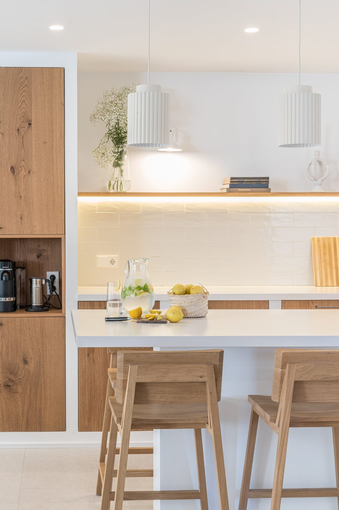
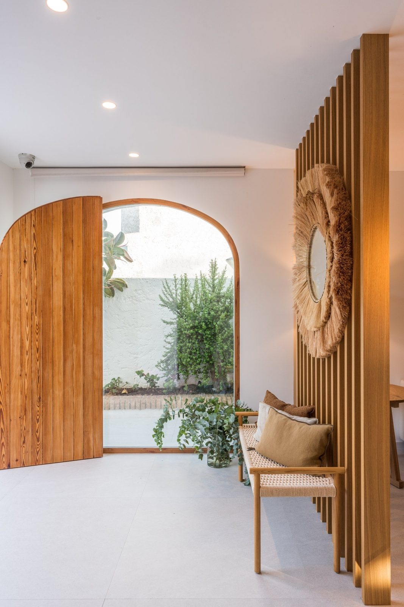
The brief
This beach house had not been renovated since the 1950s and needed a complete transformation. The existing layout consisted of numerous small rooms, making the house feel dark, fragmented and inefficient in its use of space.
The brief was to rethink the entire layout and create a light, open and welcoming home, making the most of the natural light from the terrace and the proximity to the beach.
The vision was to create a relaxed and understated interior, with a strong connection to the surrounding landscape of pine trees and Mediterranean vegetation. Natural materials, a fresh colour palette and an absence of unnecessary ornamentation would form the foundation of the design.
Above all, the home needed to become a place where the family could spend time together, cook, share meals and enjoy a slower pace of life.
The design
The first step was to completely rethink the layout, removing the small, separate rooms and bringing the ground floor together into one open and connected living space.
The windows were opened up to welcome more natural light and strengthen the relationship between indoors and outdoors. The kitchen became the central element of the ground floor, designed as a natural gathering place where the family could cook together, share meals and enjoy time with one another.
By opening up the spaces and allowing light to travel throughout the ground floor, the house gained a completely different sense of scale and atmosphere. The new layout also creates a more natural connection with the terrace and the surrounding landscape.
Throughout the house, the design follows a simple and relaxed approach. Rather than introducing decorative elements for their own sake, the focus was on natural materials, honest finishes and a carefully considered palette inspired by the environment.
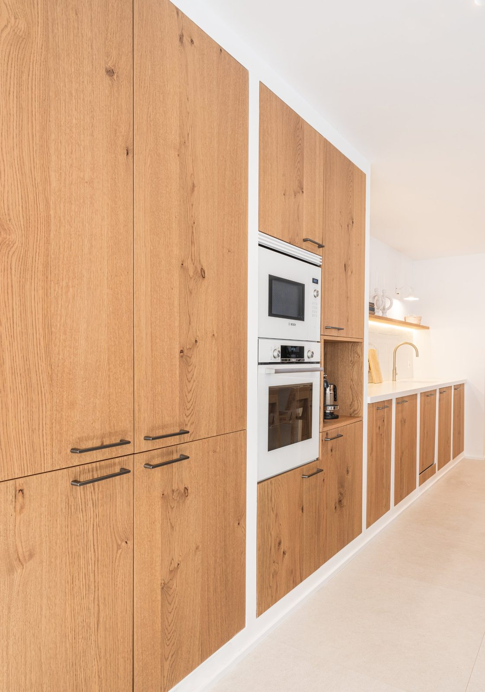
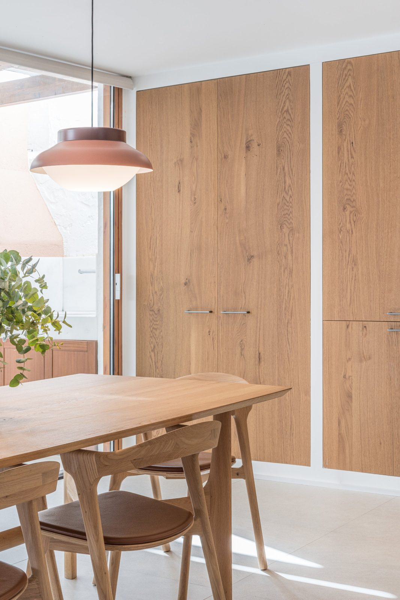
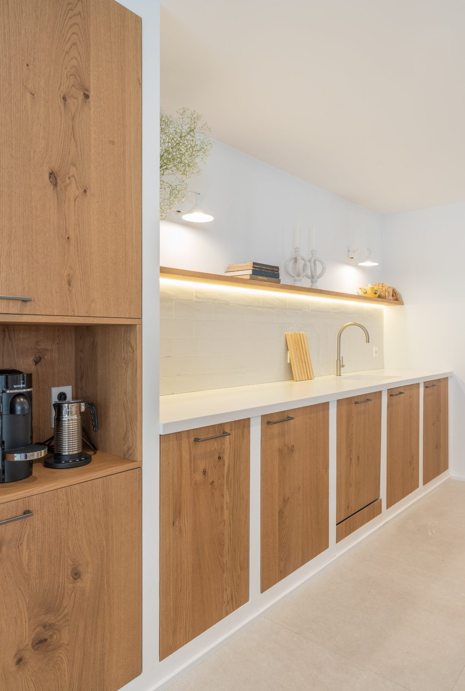
Materials and details
The material palette takes its inspiration directly from the surrounding landscape. Wood, ceramic, marble and natural fibres such as jute and rattan bring texture and warmth, creating an earthy and understated atmosphere.
The colours were chosen to echo the natural surroundings: soft sandy tones capture the warmth of the beach, while mustard, forest green and terracotta introduce subtle references to the sunlight, pine trees and Mediterranean vegetation.
These colours are carried throughout the bedrooms, giving each space its own character while maintaining a natural connection with the rest of the house.
The overall approach was to keep the interior light, fresh and uncomplicated, allowing the materials, textures and surrounding landscape to take centre stage.
The result is a relaxed coastal home that feels deeply connected to its setting, where natural materials, generous light and thoughtful spatial planning create a welcoming backdrop for family life.
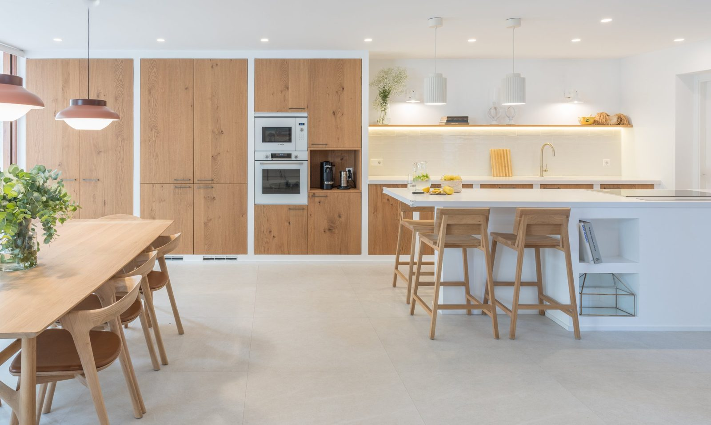
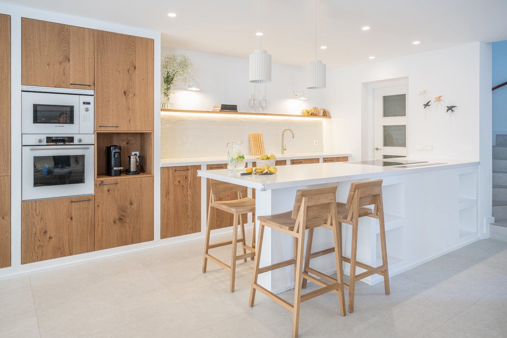
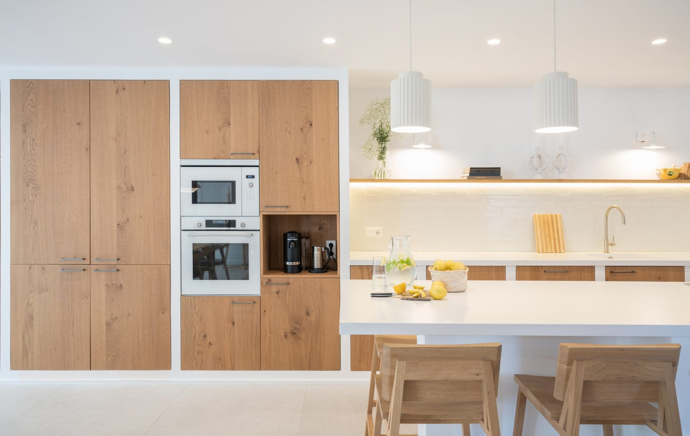
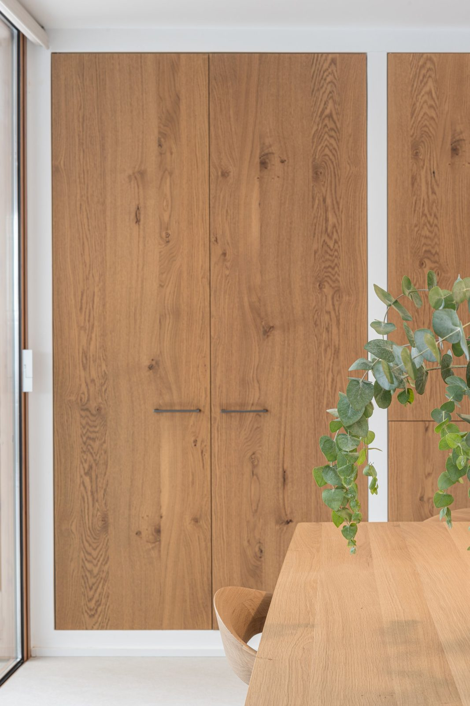
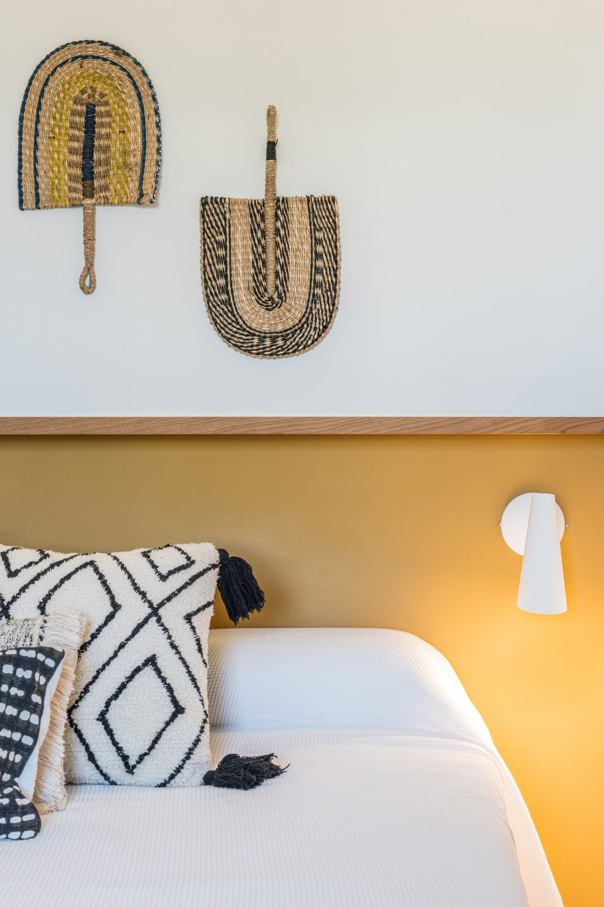
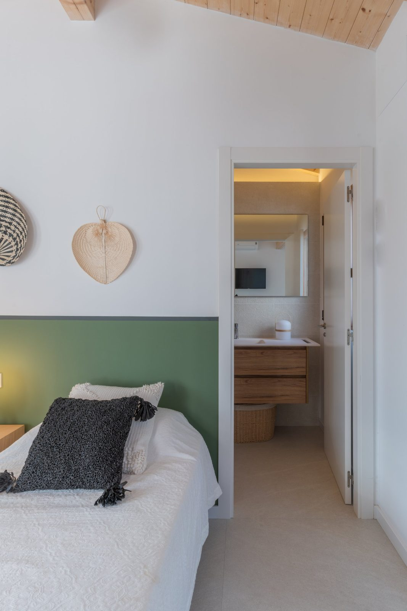
Project information
- Services
- Interior design · Kitchen design & bespoke joinery · Furniture & styling
- Property type
- Beach house
- Photography
- Hilke Sievers